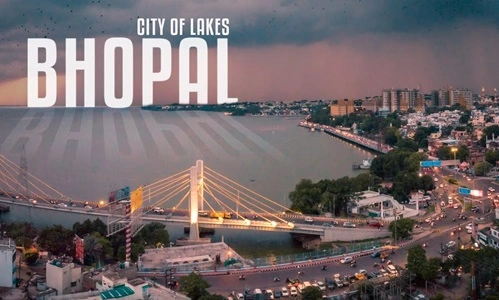
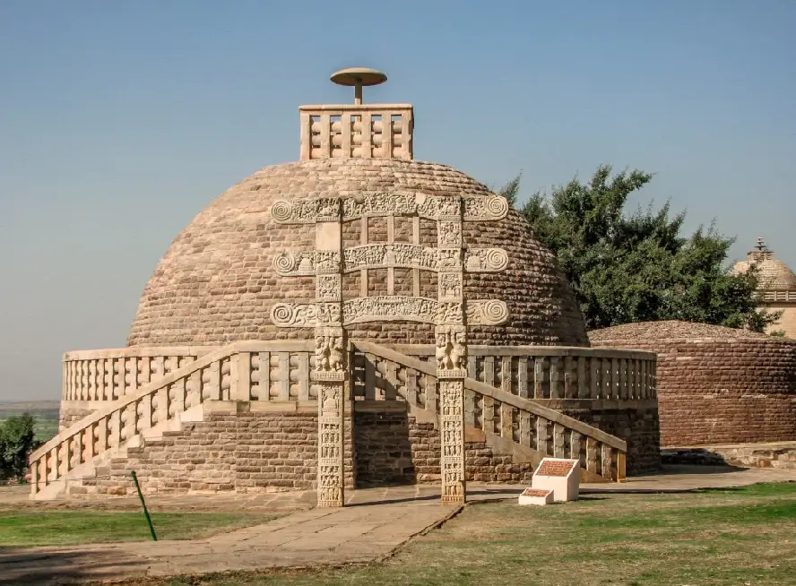
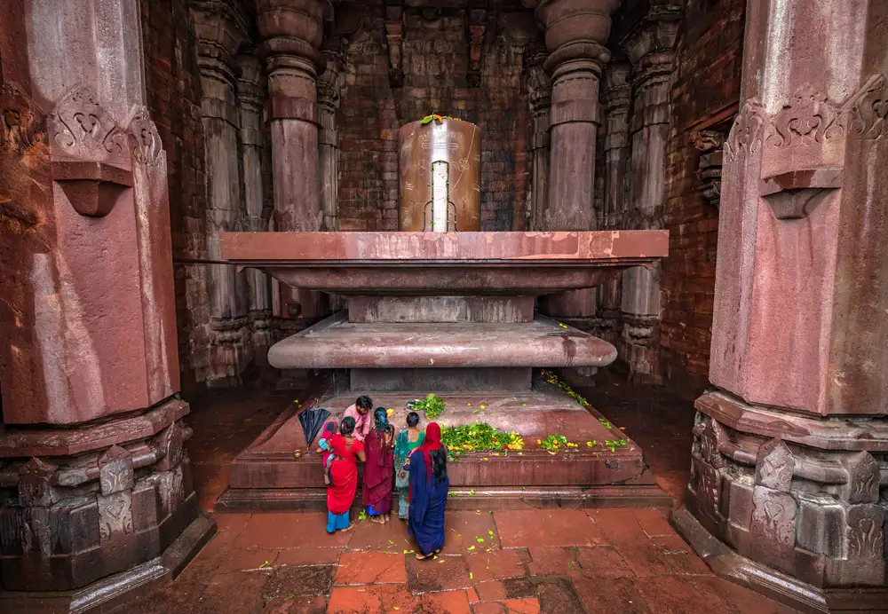
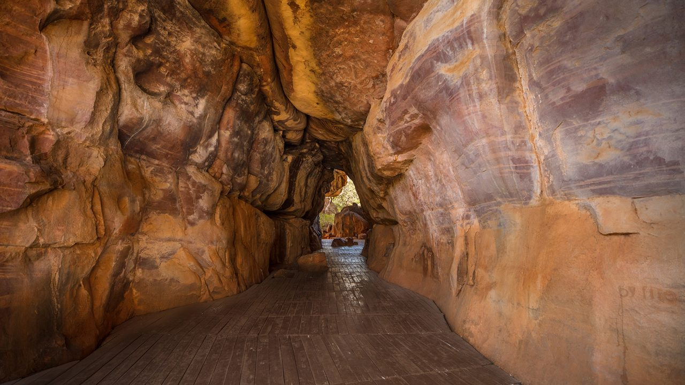

START: Bhopal
Bhopal
Begin your journey in the City of Lakes. Visit Upper Lake, Van Vihar, and enjoy the bustling local bazaars.
 Check NowDay 1
Sanchi
Explore the iconic Buddhist monuments and stupas in Sanchi, a UNESCO World Heritage site.
 Check NowDay 2
Bhojpur
Visit the grand unfinished Shiva temple and marvel at the monolithic Shiva Linga.
 Check NowDay 2

Day 2
Bhimbetka
See ancient cave paintings and rock shelters that reflect early human civilization.
 Check NowDay 3

Day 3
Pachmarhi
Spend two days in the Queen of Satpura. Enjoy waterfalls, caves, and scenic viewpoints.
 Check Now
Check Now
Day 4
Return to Bhopal
Conclude your journey back in Bhopal, relax and reflect on the beautiful experiences of the tour.
Check NowDay 6
END: Bhopal